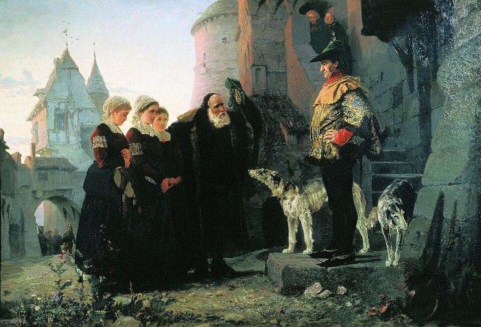

Saint / folklore
Droit du seigneur (Sagranella)

Background
The lord’s claimed right of sexual access to the women of his estate.
The droit du seigneur, or ius primae noctis, is the supposed right of a feudal lord to sleep with a vassal’s bride on her wedding night. Most historians treat it as a myth, or at best a symbolic fee: no reliable medieval law codifies it. The idea owes much of its fame to Beaumarchais’s Marriage of Figaro (1778) and to Mozart’s opera of it (1786).
What survived in the South was the reality the legend stood for: the latifondo. These were huge estates worked by landless day-labourers (braccianti) under a steward’s absolute authority. Hiring was day by day in the piazza, and pay and hours were whatever the estate decided. Abuse of women workers was a recurring complaint well into the twentieth century. The post-war land reforms of 1950 began breaking up the great estates.
Droit du seigneur · Ius primae noctis (it) · Latifundium · Latifondo (it) · Riforma agraria (it)
· Search Google ↗In Naples ’44
Said, at Sagranella, to be still practised as a matter of course on the neighbouring big estate, whose steward reportedly feels a prospective woman worker’s muscles before hiring her for a sixteen-hour day.
Appears in 1 diary entry.
-
September 3 1944Following Don Ubaldo's death, the section relocates to a remote, archaic hill village with its own strange local fox-cult ritual.
reported to be practised as a matter of course on the neighbouring estate, where the steward is said to feel a prospective female worker's muscles before employing her
Use ← → to move between pages